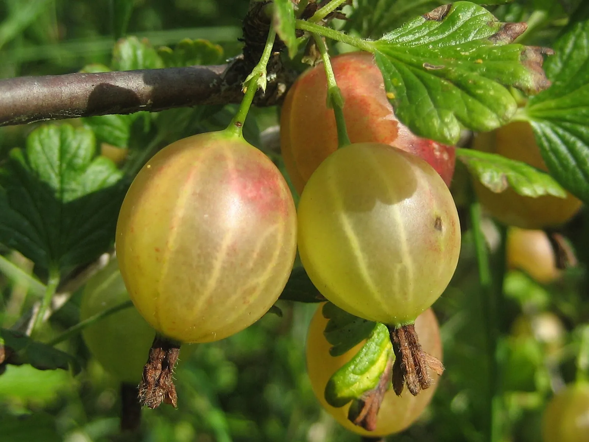

The fruit tree guild, role by role: which parts are load-bearing and which are folklore
The permaculture apple-tree guild looks the same on every blog. Some of it is real and some has nothing behind it. Here is the whole thing graded, claim by claim.

Photo: Pavel Leman · CC BY-SA 3.0, via Wikimedia Commons.
Ground you will never dig again. This is the first decision, and the one that can’t be undone
{’Room’: ‘about 25 square meters270 square feet to start, and more every year as the tree grows into it’}
Your local invasive or noxious weed list (in the US, your state’s), before you buy any woody nitrogen fixer
Search for a fruit tree guild (what this planner calls a plant team) and you’ll find the same picture over and over: an apple tree in the middle, a ring of comfrey, a ring of daffodils, some garlic, a nitrogen-fixing shrub, and a set of confident labels saying what each one does for the tree. It’s an appealing idea. A small permanent community of plants that looks after itself.
The picture isn’t wrong, exactly. But the labels are doing very different amounts of work. Some name a mechanism with real evidence behind it. One names a plant that will escape your garden and is banned in several states. And at least one names an effect that, as far as anybody has measured, doesn’t exist.
This guide takes the whole thing apart and says how much is known about each piece. A design that’s meant to last forty years deserves that.
What decisions should I get right before I plant?
Almost every guild article starts with the plant list. The plant list is the least important part. These two come first. They’re both as well established as anything on this site, and getting either wrong is expensive in a way no plant choice is.
Perennial members must not be sited in ground that is annually turned or rotated.
This is the one that catches people who are already gardening well. You’ve got beds, you rotate them properly, and a guild sounds like a nice thing to add to one. It’s a contradiction. A rotation works by moving crops; a perennial works by staying put and building a crown. Put the two in the same ground and each season’s digging destroys the thing that needed a decade. The fix is deliberate and plain: perennials go in permanent ground, and the annuals rotate around them.
A tree or shrub plant team's ground is its drip-line ring, not a bed
And this is why the tidy circular diagram misleads. A guild isn’t a bed with a tree in it. Its real extent is the drip line and beyond, it moves outward every year for a decade, and it doesn’t have corners. The planner treats it that way, as rings around a center that you plan outward:
1 × Apple
55 × Daffodil
6 × Russian comfrey
55 × White clover
24 × Yarrow
The real placement. The drip-line rings need about 19 ft across, and the planner draws the same layout.
Plan the space the tree will need in ten years, whatever size the whip is now.
What roles go into a fruit tree guild, and do they work?
The canopy, the tree itself
This is the only member you can’t leave out, and the one real gate on it is climate. Your hardiness zone decides which fruit tree survives the winter where you live, which is the one job zone is for. Apple is the classic choice here; pear, plum, peach and sour cherry all fill the role, and the colder your zone the shorter that list gets.
The bulb ring, the simplest idea in the design
A bulb ring suppresses turfgrass competition at a fruit tree trunk.
… delayed the onset of fruiting and reduced vegetative growth compared to trees surrounded by an area that had been kept vegetation-free with mulch, cultivation, or herbicides
The reasoning is simple, and half of it is well sourced. Turfgrass at the trunk competes hard with a young tree: in a Utah State experiment, grass growing near apple trunks delayed the first fruit and slowed the tree’s growth, and extension guides say to keep a clear ring of bare or mulched ground around the trunk. What no one has tested is whether a ring of bulbs does that job, and daffodils sleep through the summer, just when grass grows hardest. So the ring itself is only A good hunch: a sensible idea, with the grass half proven and the bulb half untested.
The second claim about the bulb ring is weaker, but it isn’t nothing:
If you skip this, it still grows, just less well. The planner suggests it.
How it works: Narcissus bulbs and tissue contain lycorine and related alkaloids, which are toxic to eat. Rodents avoid them accordingly. Field mice rarely touch daffodils even where they readily eat tulips and crocus, so a ring of narcissus tends to be left alone. It works by avoidance. It discourages feeding on the bulbs but is no barrier and no guarantee against every rodent.
Evidence: checked against 3 sources in the research-based literature.
A good hunch, and look at what the evidence is. Extension services report that voles and mice largely leave daffodils alone, and daffodils are toxic, so the avoidance is at least plausible as a mechanism as well as an observation. That’s a good deal better than most companion claims manage. It’s still no trial showing your tree suffered less rodent damage, which is why it advises and doesn’t promise.
And then there’s the third one, which is where the guide stops being polite:
Garlic in a fruit tree's bulb ring deters trunk borers.
The weakest standing the corpus has, for the bluntest possible reason. What’s recorded against this claim is that no evidence for it exists at all. There’s no weak evidence and no conflicting evidence; nobody has shown this. Planting garlic around a fruit tree to repel borers is a thing the internet says. If you like garlic, plant garlic; it’s a fine plant and it costs you nothing. Just keep watching the trunk for borers. Planting garlic instead of watching is the trade you’d be making.
The rule wasn’t deleted. A claim that comes up empty stays in the record, marked inert, so the next person who meets it on a blog finds out here that it was looked into.
The mulch producer: comfrey, and the story attached to it
Comfrey is a dynamic accumulator that mines subsoil minerals and makes them available.
What is known: Symphytum has deep roots and produces large potassium-rich biomass that decomposes fast. That is a good mulch plant. The specific mineral-mining claim has very little behind it.
Evidence: checked against 1 source in the research-based literature.
This is the most interesting entry in the guild. The popular claim and the useful reality have been welded together for so long that pulling them apart sounds like an attack on the plant. It isn’t one. Comfrey is excellent here: deep-rooted, enormous fast-growing bulk, potassium-rich tissue, and it breaks down quickly when you cut it and drop it. Chop-and-drop comfrey is good practice, and this guide recommends it.
What has very little behind it is the specific dynamic accumulator story, that comfrey’s roots mine minerals from subsoil other plants can’t reach and deliver them to the surface. The Cornell work that gets cited for it confirms comfrey tissue is high in potassium and silicon. That’s a statement about concentration. It says nothing about sourcing. High uptake from soil that already has it available is a different thing from mining a layer nobody else can reach, and the mining is the part of the claim doing the persuading.
So plant the comfrey. Cut it three or four times a season and drop it under the tree. You’re adding good mulch. You aren’t running a nutrient pump.
The nitrogen fixer, and the one that must not go in
Autumn olive is a good nitrogen fixer for a fruit tree plant team.
The planner won’t plan around this claim. What is known instead is below.
What is known: It fixes nitrogen. It is also bird-dispersed, forms dense thickets, and is listed as invasive or noxious across much of the eastern and midwestern US.
Evidence: checked against 2 sources in the research-based literature.
This plant is an invasive species in North Carolina
fs.usda.gov
Elaeagnus umbellataUSDA Forest Service, Fire Effects Information System (Munger 2003)
Seeds are dispersed by frugivorous birds
Remedy
Autumn olive will escape your yard. Use white clover, wild lupine, or a native fixer, and check your state noxious weed list before planting any woody nitrogen fixer.
Read that card again: well established, fatal if ignored, and blocked outright. This is more than a “consider alternatives” note. Autumn olive is a real nitrogen fixer, and it’s recommended for exactly that reason all over the permaculture web. It’s also bird-dispersed, forms dense thickets, and is listed as invasive or noxious across much of the eastern and midwestern US, with several states banning its sale outright. It won’t stay in your yard. Birds will take it into everyone else’s.
White clover fills this role everywhere. Wild lupine fills it as a native. Both are in the planner as the standard and the alternative fixer, and neither carries this problem.
The wider habit holds beyond this one shrub: check your local invasive or noxious weed list (in the US, your state’s) before planting any woody nitrogen fixer. The trait that makes a plant good at colonising poor ground on your behalf is the same trait that makes it good at colonising ground you didn’t offer it.
Is a fruit tree guild worth building?
Yes, though for different reasons than the ones usually given.
What’s load-bearing is the structure: permanent ground that never gets turned, planned at the size the tree will grow into, with the grass kept off the trunk. Those are well established, the mechanisms are plain, and they’re the parts that decide whether the tree thrives.
What’s good practice but oversold is the middle tier: comfrey mulch (real, useful, wrong story), daffodils against rodents (plausible, unproven).
And the folklore is the borer-repelling garlic and the specific mineral-mining story. Both are held in the record marked inert so nobody has to re-argue them from scratch.
A guild built on the first tier, and straight about the rest, is a very good design. A guild built on the third tier is a picture.
Further reading
Good places to read more about the technique on this page. The grade on each card comes from that card’s own sources.